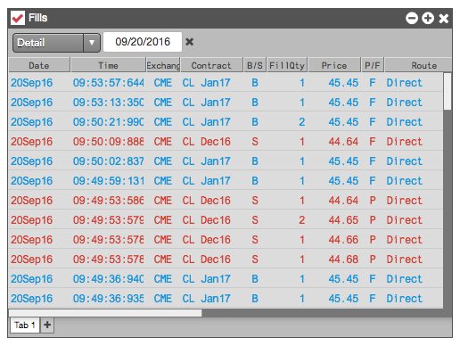
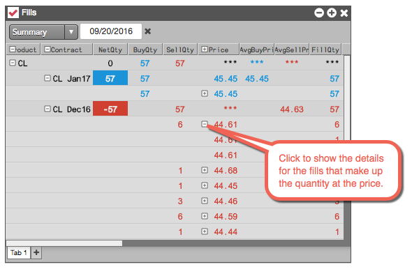
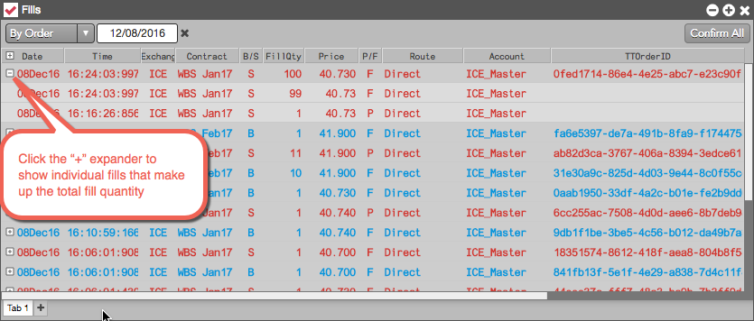
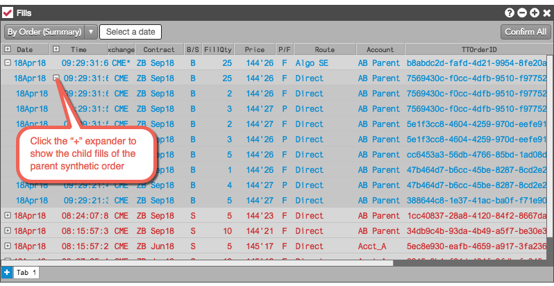
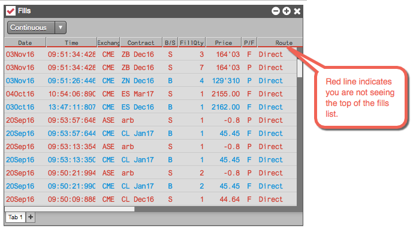
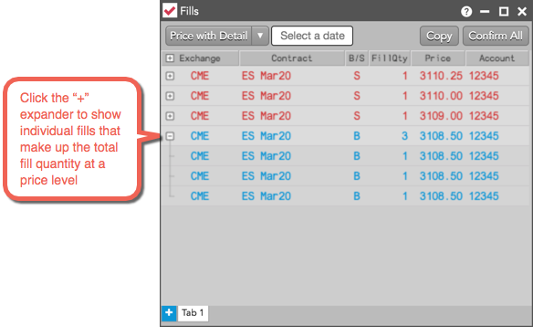

When launched, the Fills widget displays only fill activity for the current day. You can also display other views of the fill activity, including:
To display a list of fills for a specific day, select Detail from the drop-down and specify the desired date.

To display a summarized view of a day's fills, select Summary from the drop-down and specify the desired date.

To display individual fills that make up the total fill quantity for an order, select By Order from the drop-down and specify the desired date.

Note: TT "slicer" order types (e.g., TT Iceberg) submit each slice as a separate child order with an individual TTorder ID, so the By Order option treats each slice as a separate order and groups the fills within each child order.
To display the child order fills of a synthetic parent order, such as a TT Iceberg or custom algo, select By Order (Summary) from the drop-down and specify the desired date.

To display a continuous view of incoming fills, select Continuous from the drop-down menu.

To see older fill activity, simply scroll down the list. As you scroll down, the Fills widget automatically retrieves another set of fills and adds them to the bottom of the list.
When selected from the drop-down menu, the Price with Detail view sums all child order fills and partial fills by price and displays summarized quantity totals at each price level grouped by contract. You can also view these fill details for a specific date.
Click the expander in the Price column to view each fill at that price level. You can rearrange and show/hide columns to create a simple summary view of your fills at each price level as shown.
